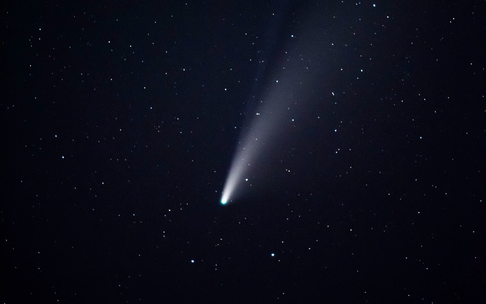
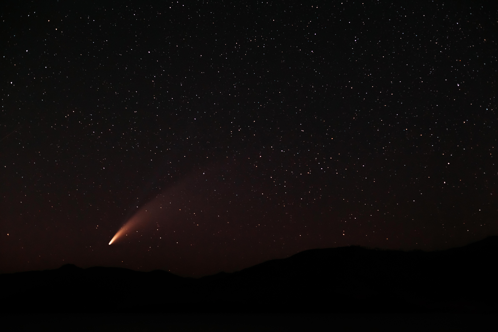
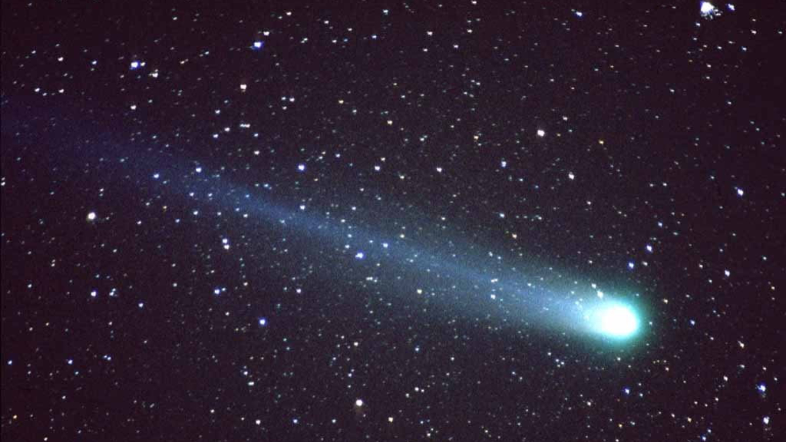
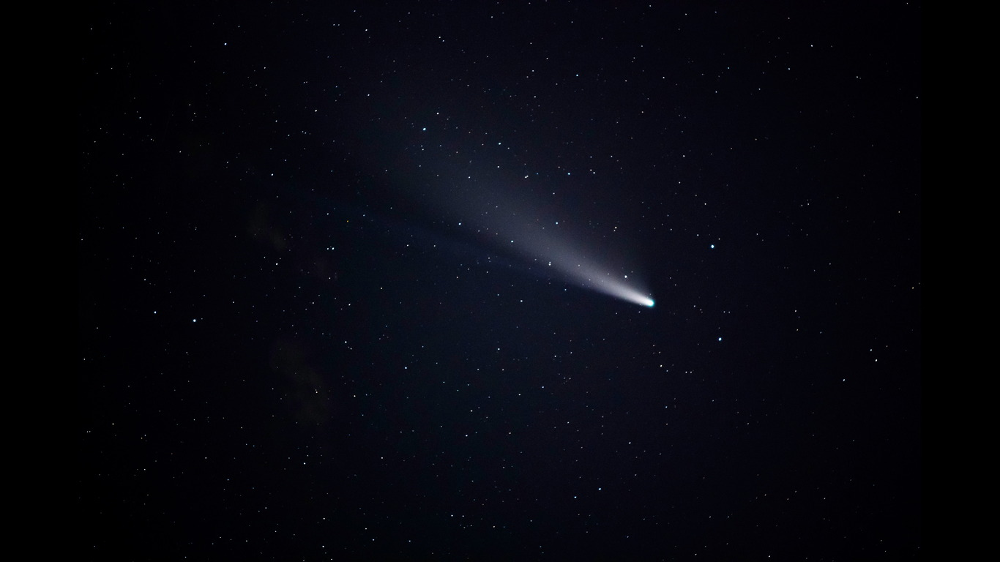
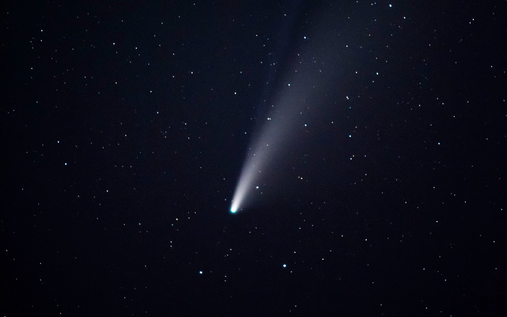
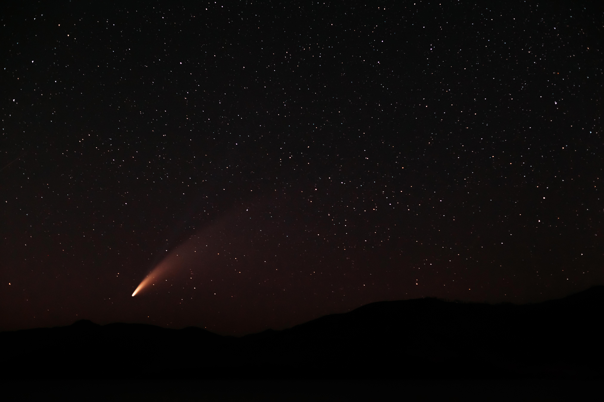
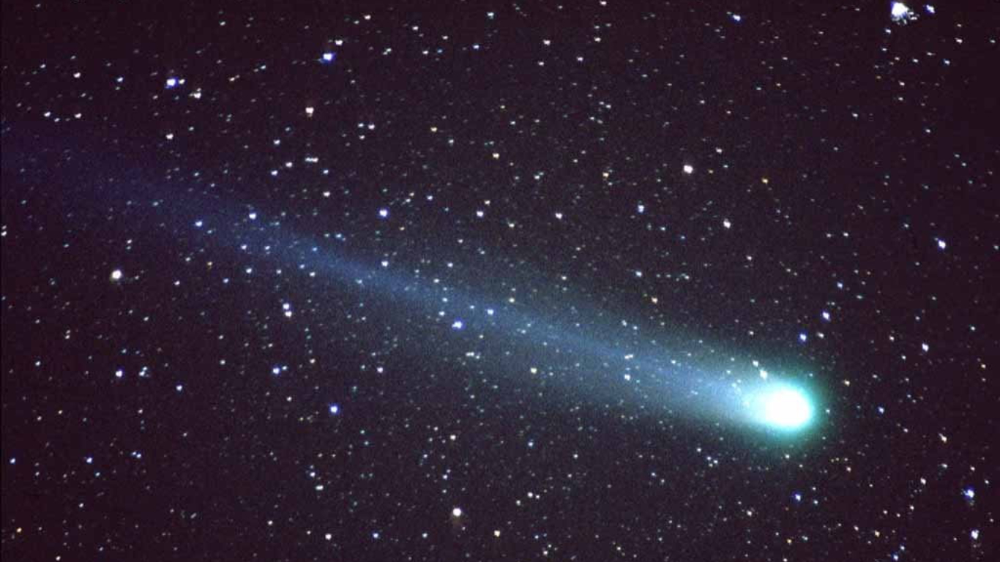
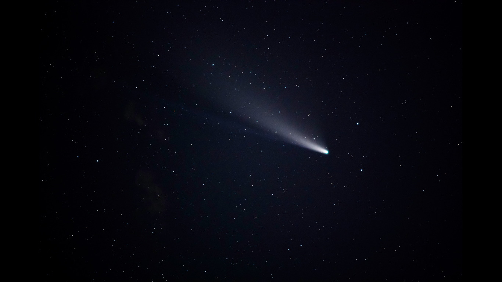

About Comets
Comets are celestial bodies composed of ice, dust, and volatile gases that orbit the Sun in elongated, elliptical trajectories. Unlike planets, comets spend most of their time in the outer reaches of the solar system, in regions known as the Kuiper Belt or the Oort Cloud. When a comet approaches the Sun, heat causes the ices within it to vaporize, creating a glowing coma (a cloud of gas and dust) around a solid nucleus.
Structure
A. Nucleus
The solid, central core of a comet, often only a few kilometers in diameter. It consists of water ice, frozen gases, dust, and organic compounds.
B. Coma
As a comet nears the Sun, solar radiation causes the nucleus to release gases and dust, creating a bright, glowing coma around the nucleus. The coma can be larger than some planets.
C. Tail
The Sun's radiation and solar wind push the released materials away from the Sun, forming a glowing tail that always points away from the Sun. There are two types of tails: a dust tail and an ion tail.
-
Dust Tail
Composed of small dust particles driven by sunlight, it appears yellowish and follows a slightly curved path. -
Ion Tail
Composed of ionized gases, it is pushed directly away from the Sun by the solar wind and can appear bluish. Ion tails can be very straight and can point in a direction different from the dust tail.
Media
Gallery
 






